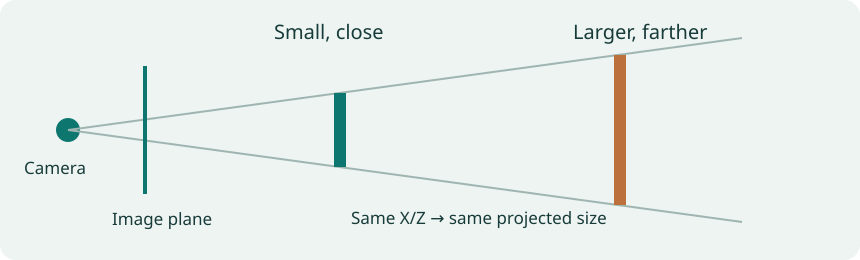
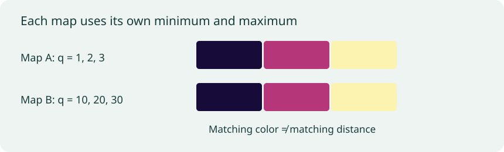

Guide 2 of 6 · 3 min
Depth, scale, and the camera
Why near and far are easier than meters
Page narration: listen, read, or record
Page audio is pending.
A single photo leaves the physical scale uncertain. If we double the size of a room and move everything twice as far from the camera, its image can stay the same. A model can still use overlap, perspective, and familiar objects to estimate near and far. The models in this experiment give relative values, rather than distances in meters. Their color ranges are separate too, so yellow in one map isn't the same distance as yellow in another. This matters when we compare their predictions with each other or with a sensor.
Download scriptRecord your own narration
Use the script above as a guide. Press Record to enable the microphone. Audio stays on your device.
Press Record when ready.
Download before leaving this page. Add the clip to the narration folder to publish it. Recording guide
A photograph can tell you that a chair is in front of a wall. It gives you much less certainty about how many meters separate them.
The same picture, a different-sized room

Double every object and every distance from the camera. With the same camera, could the image stay the same?
Yes. Doubling both X and Z leaves X/Z unchanged, and the same applies to Y/Z. The image can stay the same while the scene has a different physical scale.
Imagine a model room. Double the size of every object and double its distance from the camera. With the same camera, both scenes can project to the same image.
For a pinhole camera, a point X, Y, Z projects to u = fₓX/Z + cₓ and v = fᵧY/Z + cᵧ. Z is depth along the optical axis; fₓ and fᵧ are focal lengths in pixels; cₓ and cᵧ locate the principal point. Scaling X, Y, and Z together leaves the ratios unchanged.
A model narrows down the possibilities using learned visual cues. Overlap suggests which object is in front. Perspective and texture suggest how a floor recedes. A familiar chair provides an approximate size. Those expectations can fail with an unusually large object or a camera unlike the training examples.
Relative values and physical distances
| Output | How to read it | Example use |
|---|---|---|
| Relative depth | Describes near/far structure on an arbitrary scale. Some formulations also allow a shift. | Comparing a foreground object with its background. |
| Relative inverse depth q | Larger values indicate closer surfaces in the convention used by this tutorial. | Checking which of two annotated points the model places nearer. |
| Metric depth Z | Reports a physical distance, with units and a camera convention. | Comparing predicted meters with compatible sensor measurements. |
Suppose two points have relative inverse-depth values of 2 and 4. The second is closer in our convention. That does not make either value a distance in meters, or establish that one distance is half the other: the output has an arbitrary scale and may include a shift.
V2 and AC use larger values for closer surfaces. The DA3 checkpoint used here outputs relative depth with smaller values closer; I convert its positive values to inverse depth for the comparison. The three maps still have different numerical scales.
Even metric output needs a distance convention. Camera-axis depth measures Z; range measures distance along the viewing ray. They differ away from the image center. A sensor reference and a model must use compatible definitions before their meter values can be compared.
What the colors tell you

Two model maps show a chair in yellow. Does that mean they predict the same physical distance?
No. Each map has its own color range. Yellow marks the closer end of that range.
Each inverse-depth map uses its own minimum and maximum for the color ramp. Yellow means closer within that map; dark purple means farther.
A yellow patch in one model's map may have a different raw value from a yellow patch in another. Compare point ordering or an error measure rather than matching colors across models.
Which surface is the target?
An opaque chair has a visible surface to estimate. A mirror has a nearby physical surface and a reflection of another scene. Glass can show a background and reflections at once. A near/far annotation needs to identify which of those surfaces it describes.
A thin chair leg presents another problem. It may cover only a few pixels, with edge pixels mixing the leg and background. If the network loses that detail, resizing its output will not bring the leg back.
Eigen, Puhrsch, and Fergus addressed scene layout and local detail with a coarse prediction followed by refinement [2]. The next section follows that problem into transformer-based models.